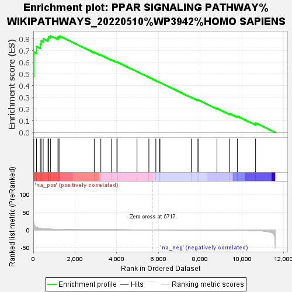
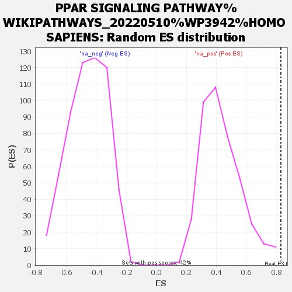

| | | Dataset | dex_ctrl |
| Phenotype | NoPhenotypeAvailable |
| Upregulated in class | na_pos |
| GeneSet | PPAR SIGNALING PATHWAY%WIKIPATHWAYS_20220510%WP3942%HOMO SAPIENS |
| Enrichment Score (ES) | 0.82787144 |
| Normalized Enrichment Score (NES) | 1.9104192 |
| Nominal p-value | 0.0023980816 |
| FDR q-value | 0.4430313 |
| FWER p-Value | 0.994 |
Table: GSEA Results Summary

Fig 1: Enrichment plot: PPAR SIGNALING PATHWAY%WIKIPATHWAYS_20220510%WP3942%HOMO SAPIENS
Profile of the Running ES Score & Positions of GeneSet Members on the Rank Ordered List

Fig 2: PPAR SIGNALING PATHWAY%WIKIPATHWAYS_20220510%WP3942%HOMO SAPIENS: Random ES distribution
Gene set null distribution of ES for PPAR SIGNALING PATHWAY%WIKIPATHWAYS_20220510%WP3942%HOMO SAPIENS